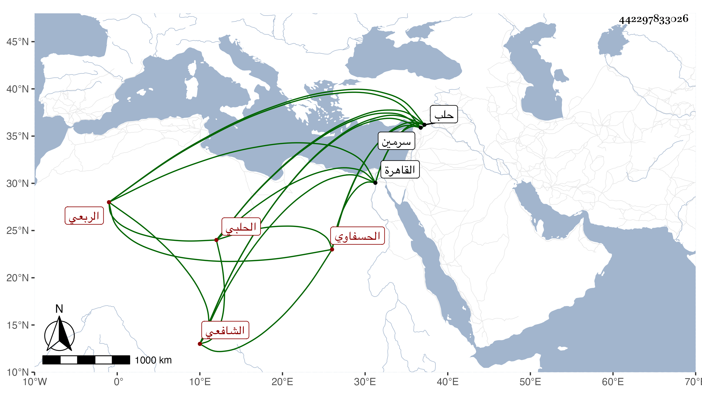

0902Sakhawi.DawLamic.ITO20230111-ara1.EIS1600.442297833026
Biography ID: 442297833026
269
أبو بكر بن يوسف بن خالد بن أيوب بن محمد الشرف بن قاضي القضاة الجمال الربعي الحسفاوي الحلبي الشافعي عم العزابي البقاء محمد بن إبرهيم ابن يوسف قاضي القضاة . ولد بعد سنة عشر وثمانمائة وسمع البرهان الحلبي وشيخنا والشهاب بن زين الدين وغيرهم واشتغل قليلا وناب في القضاء عن الشهاب الزهري واستقل بسرمين نحوا من ثلاثين سنة فلما أعيد ابن أخيه العز لقضاء حلب أرسل إليه من القاهرة يستخلفه ومات في سنة سبع وثمانين عفا الله عنه .
